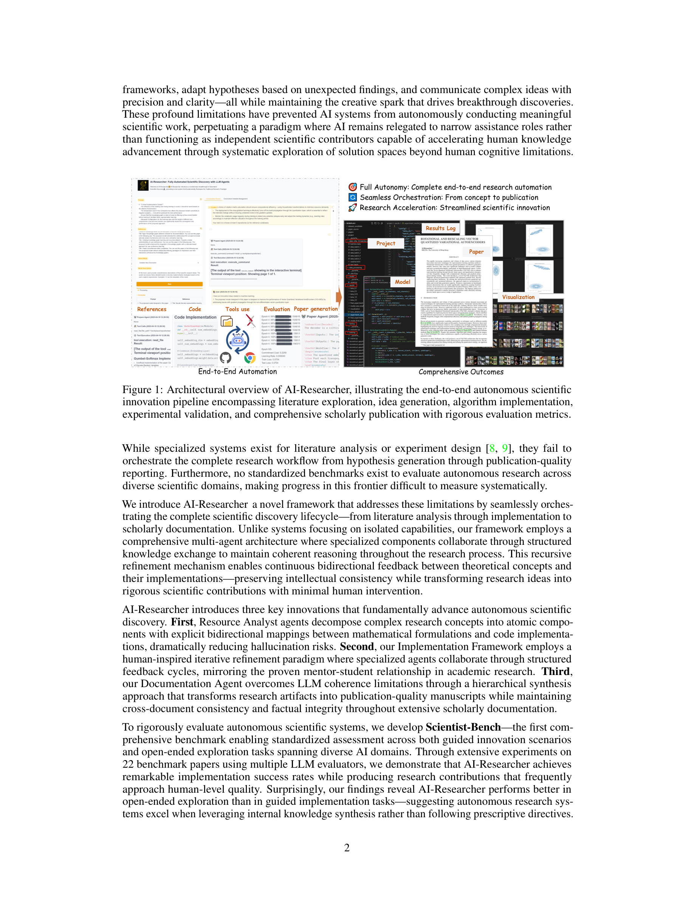

저자: Jiabin Tang, Lianghao Xia, Zhonghang Li, Chao Huang | 날짜: 2025 | Link: https://arxiv.org/abs/2505.18705

Figure 1
문헌 리뷰부터 가설 생성, 알고리즘 구현, 출판 수준 논문 작성까지의 전체 연구 파이프라인을 최소한의 인간 개입으로 자율 수행하는 AI-Researcher 시스템과, 자율 연구 능력을 체계적으로 평가하는 Scientist-Bench 벤치마크를 제안한다.
Abstract에서 추출된 독창성 문장: The powerful reasoning capabilities of Large Language Models (LLMs) in mathematics and coding, combined with their ability to automate complex tasks through agentic frameworks, present unprecedented opportunities for accelerating scientific innovation.. In this paper, we introduce AI-Researcher, a fully autonomous research system that transforms how AI-driven scientific discovery is conducted and evaluated.. Our framework seamlessly orchestrates the complete research pipeline--from literature review and hypothesis generation to algorithm implementation and publication-ready manuscript preparation--with minimal human intervention.. To rigorously assess autonomous research capabilities, we develop Scientist-Bench, a comprehensive benchmark comprising state-of-the-art papers across diverse AI research domains, featuring both guided innovation and open-ended exploration tasks.. Through extensive experiments, we demonstrate that AI-Researcher achieves remarkable implementation success rates and produces research papers that approach human-level quality.. This work establishes new foundations for autonomous scientific innovation that can complement human researchers by systematically exploring solution spaces beyond cognitive limitations.
| 항목 | 점수 |
|---|---|
| Novelty | 4/5 |
| Technical Soundness | 3/5 |
| Significance | 4/5 |
| Clarity | 4/5 |
| Overall | 4/5 |
총평: 자율적 과학 연구의 비전을 end-to-end 시스템과 전용 벤치마크로 구체화한 의욕적 연구이다. 전체 연구 파이프라인 자동화와 Scientist-Bench의 기여가 크나, human-level 품질 주장의 검증 강화와 AI 외 도메인으로의 확장이 핵심 과제이다.